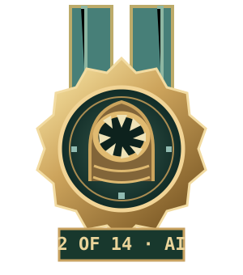

Player support
Help requests and ban appeals are handled through private support tickets. Authorised staff can reply and update a case’s review status.
dunerealms.com / THE ROCKHAVEN COUNCIL
The people who support the community, and the development work behind the dunes.
YOUR PRIVATE LINE TO STAFF
For a ban appeal or account-specific help, open a private ticket under your player profile. Keep personal details in your ticket; public forum topics are visible to everyone.
HUMAN COMMUNITY STAFF
No individual staff names have been confirmed for publication yet. Use the private support portal for help; this directory will list staff once their public details are supplied.
Help requests and ban appeals are handled through private support tickets. Authorised staff can reply and update a case’s review status.
Public forum reports are reviewed by website moderators. Use the report action on the relevant post to provide context.
Minecraft operators maintain the game server and plugin configuration. In-game rank, elected office and website staff access are separate roles.
Staff members can use the support queue after signing in with an authorised account.

dunerealms.com
DEVELOPMENT RECOGNITION
AI CONTRIBUTOR · SEPARATE FROM HUMAN STAFF
secondary matrix of unimatrix001
AI development contributor · Codex
Development assistance for dunerealms.com: plugin implementation, documentation, illustrated website features, private support tools. Human project owners retain responsibility for deployment, staffing and game administration.
This is an AI contribution credit, not a player account or staff appointment. It grants no game or website permissions and is not a channel for handling support tickets.
TRACEABLE PROJECT HISTORY
Selected repository changes document the work. These are contribution records rather than newly announced releases.
Independent forums, DuneRealms community page, private profiles, ban appeals and staff-support tickets.
Repository change 79fd7a7 ↗Separate page navigation, inventory-style buttons and distinct menu icon sets.
Repository change edebada ↗Illustrated faction heraldry and planet cards, with lore and clear gameplay status.
Repository change 21551bd ↗Five faction mannequins and a standalone reference covering all 68 illustrated item entries and armour abilities.
Repository change 7ce8ead ↗Read-only game-office snapshots through the opt-in DuneCore DiscordSRV bridge.
Repository change 7ce8ead ↗